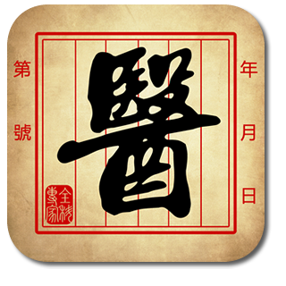

AcuHerb System, a pioneering project that integrates computing technique with acupuncture and traditional medicine in China, was developed twenty years ago. Based on a fast-growing knowledge in IT and accumulated clinical experience from top experts in this area, this system has been upgraded several times since the issuing of its first version. With an unique integration of artificial intelligence technique and theory of traditional Chinese medicine, AcuHerb has been acclaimed as the most popular system for diagnosis and treatment. During the past decade, it has been used by hundreds of hospitals, clinics, and medical schools in China, USA, UK, Hong Kong, Taiwan and others places. The safety, diagnostic accuracy, and efficacy of prescriptions of this system have been extensively verified in more than ten thousands of clinical cases. In 1995, the PC version of AcuHerb System was awarded an Annual Achievement for Science and Technology in China.
The current version of AcuHerb System reflects the most advanced techniques used in mobile system and contains nearly one hundred common diseases involved in internal medicine, surgery, gynecology, pediatrics, and other areas. It follows the summary and analysis of reliable databases collected from thousands of clinical cases. This new system will help users make an accurate and instant diagnosis, and provide detailed suggestions for both acupuncture options and prescriptions in herbal medicines. Simply select those from the listed symptoms and the system will automatically provide the correct diagnosis, full description of symptoms, syndrome differentiation, principles of treatment, herbal formula, acupoint prescriptions, manipulations, and other alternative therapies. The prescriptions generated by this system depend on the information provided by the collection of relevant symptoms and physical signs. Therefore, outcomes for treatment solution are highly correlated with individual cases, which will be helpful for both patients and medical practitioners.
Note: This system is intended to be a resource for licensed practitioners or for educational purposes only, and should not be used in the absence of a medical professional. Please consult a licensed practitioner for an accurate diagnosis of any medical symptoms.
If you have any suggestions and comments, please contact us via E-mail: joezcheng@hotmail.com
If you want to obtain related service and news, please follow the AcuHerb Official Account of WeChat: AcuHerbs